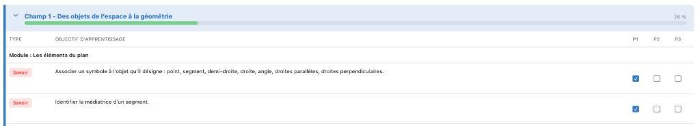
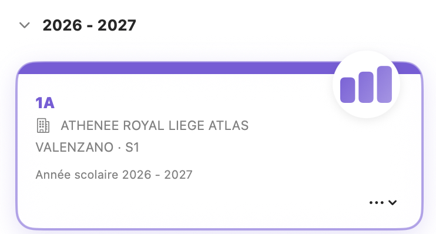
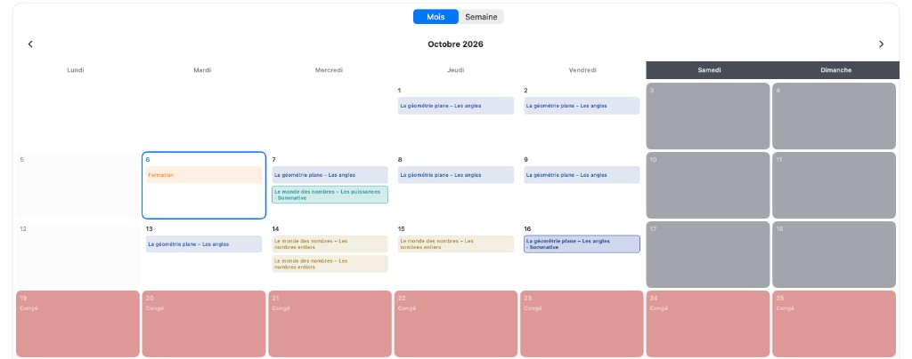
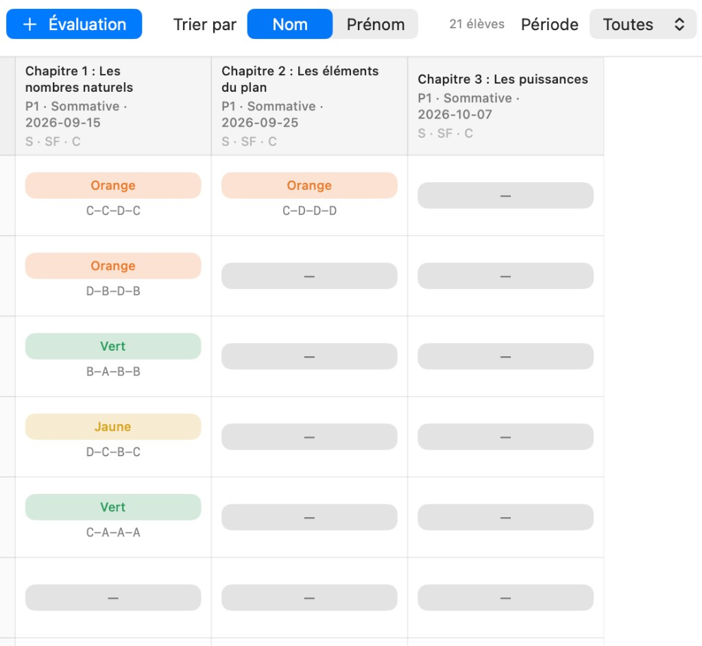
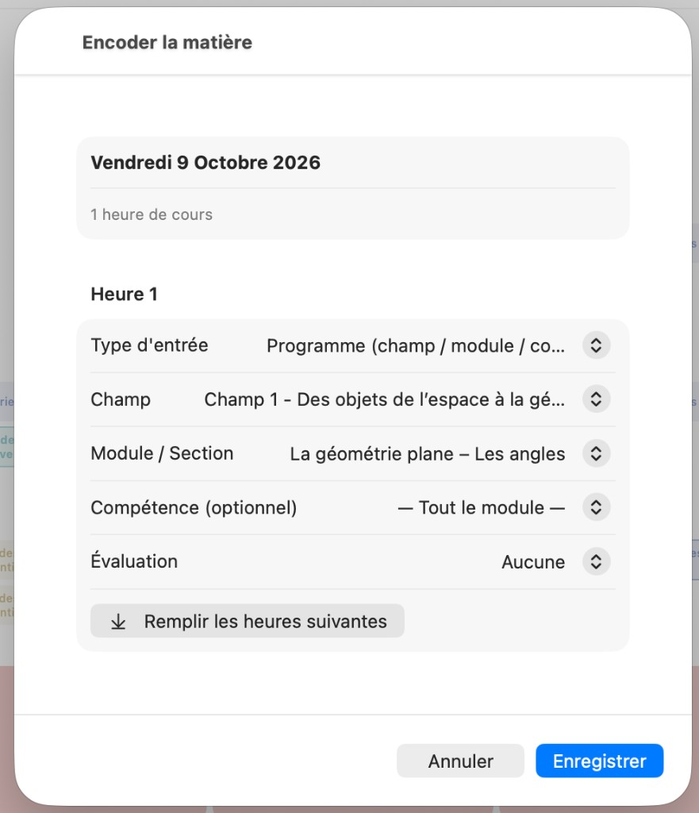
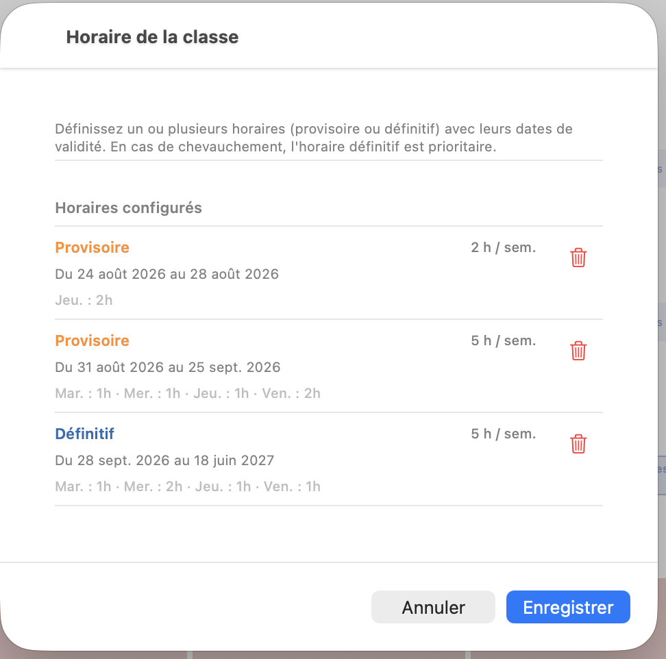

01
Cahier de matières
Progression par champ et module, types Savoir / Savoir-faire / Compétence, cases P1–P2–P3.

Tronc commun · WBECDM-MATH
Application créée pour faciliter l’encodage du cahier de matières pour les mathématiques (Tronc commun), basée sur le programme de WBE.
iPhone · iPad · Mac · Sync iCloud · Widget Aujourd’hui
Pour qui
Un outil de terrain pour le Tronc commun (1re à 3e secondaire), fidèle au programme WBE.
Gérez plusieurs classes et établissements, suivez la progression du programme, planifiez la semaine, encodez les évaluations critériées (S1), puis exportez en PDF — le tout synchronisé via le même identifiant Apple.

Cœur de l’app
Captures réelles de CDM-MATH : matières, prévisionnel et notes.
Progression par champ et module, types Savoir / Savoir-faire / Compétence, cases P1–P2–P3.

Calendrier mois / semaine : cours, évaluations, formations et congés scolaires.

Évaluations par chapitre, résultats couleur (Vert, Jaune, Orange) et critères A–B–C–D.

Fonctionnalités
Encodage du cours, horaire de classe, navigation entre les vues — tels qu’ils apparaissent dans CDM-MATH.
Carte de classe avec établissement, enseignant, niveau S1–S3 et année scolaire.
Passez de Matières à Prévisionnel et Notes sans quitter la classe.

Liez le cours du jour au programme : champ, module, compétence, évaluation.

Horaires provisoire et définitif avec dates de validité et répartition par jour.
Barre de progression par champ et cases P1 / P2 / P3 pour chaque objectif.
Vue mois ou semaine : matières planifiées, sommatives, formations, congés.
Création d’évaluations, tri des élèves, résultats couleur et critères A–B–C–D.
Sync iCloud, sauvegarde complète JSON, export PDF groupé, widget Aujourd’hui, raccourcis Siri et mode clair / sombre.
Règles pédagogiques
Les contraintes scolaires ne sont pas des options : elles sont encodées dans l’app pour coller à la pratique WBE / FWB.
Les pastilles Vert / Jaune / Orange du cahier de notes correspondent à ces règles de validation.
Au quotidien
Deux écrans centraux pour organiser la semaine et encoder le cours.
Galerie
Visuels issus de l’application réelle CDM-MATH.